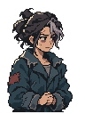
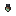
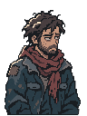

Mora gata · 24 meses
▪ 2 vendas

1 antiséptico“Mora volvió del patio sin apoyar la pata.”
UNSA · Tecnología de Objetos · Proyecto final

Tras el colapso, un veterinario atiende mascotas en un consultorio improvisado y sale a buscar suministros entre animales agresivos y supervivientes hostiles.
El juego
Cada caso es una ficha con dueño, mascota, diálogos y los suministros que hacen falta. Aceptarla abre una misión de cinco minutos con oleadas que se vuelven más densas y un arma automática.
El dueño y la mascota entran al consultorio. Diálogo estilo novela visual.
La ficha muestra la mascota, su edad humana y los suministros pedidos.
Se decide si atender el caso o rechazarlo.
WASD para moverse, el arma ataca al contacto, se recogen los suministros.
Fundido a la clínica, diálogo final y cobro de la recompensa.
Si se agota el reloj o la vida, el veterinario vuelve a la clínica y puede reintentar conservando la ficha. El cobro ocurre una sola vez.
Casos de la demo
Las fichas viven en datos/*.json. Agregar otro caso solo requiere su JSON y sus imágenes: no hay que tocar código.


1 antiséptico“Mora volvió del patio sin apoyar la pata.”


“Toby no ha levantado la cabeza desde ayer.”
Arquitectura
Cada parte depende de interfaces, no de implementaciones. Por eso cada rol pudo construir y probar su módulo por separado antes de integrar.
EstadoPantallaEntradaCuadroUML · Diagrama de clases
classDiagram
direction TB
class Vista {
<<interface>>
+leer_entrada() EntradaCuadro
+dibujar(estado: EstadoPantalla)
}
class AccionesControlador {
<<interface>>
+examinar_mascota()
+aceptar_caso()
+rechazar_caso()
+reintentar_mision()
+avanzar_dialogo()
+alternar_menu()
}
class Controlador {
<<interface>>
+actualizar(entrada, segundos)
+estado_pantalla() EstadoPantalla
}
class Comando {
<<interface>>
+ejecutar(receptor: AccionesControlador)
}
class Consultorio {
<<interface>>
+aceptar() PropuestaMision
+registrar_resultado(resultado)
}
class Mision {
<<interface>>
+iniciar(propuesta)
+extraer_resultado() ResultadoMision
+suscribir(receptor)
}
class ReceptorEventosMision {
<<interface>>
+suministro_recogido(suministro)
+intento_finalizado(desenlace)
}
AccionesControlador <|-- Controlador
Comando ..> AccionesControlador : ejecuta
Vista ..> EstadoPantalla : dibuja
Controlador ..> EstadoPantalla : prepara
Controlador ..> Consultorio : gestiona el caso
Controlador ..> Mision : coordina el intento
Mision ..> ReceptorEventosMision : notifica
Comando que llama a una acción del controlador. La vista nunca toca el modelo.Controlador extiende AccionesControlador, el receptor de los comandos.ReceptorEventosMision, como la vista para el sonido.UML · Diagrama de estados
stateDiagram-v2 direction TB [*] --> portada portada --> llegada : Jugar llegada --> por_examinar : avanzar diálogo por_examinar --> resultado_examen : examinar resultado_examen --> aceptacion : aceptar resultado_examen --> rechazo : rechazar rechazo --> llegada : siguiente caso aceptacion --> jugando : inicia misión jugando --> regresando : fin del intento regresando --> tratamiento : completada regresando --> fallo : sin vida o sin tiempo fallo --> reintento : reintentar reintento --> jugando tratamiento --> llegada : cobra y sigue tratamiento --> sin_casos : cola vacía sin_casos --> [*]
FasePantallaEl controlador mantiene la fase actual y decide qué acciones están disponibles en cada una.
regresando es el fundido a negro de vuelta a la clínica.fallo conserva la ficha: el reintento reinicia vida, enemigos, suministros y reloj.tratamiento.Organización del código
src/ ├─ modelo/ │ ├─ catalogo/ fichas, JSON · rol 3 │ │ ├─ json/ lector propio │ │ └─ mascota/ Mascota, Gato, Perro, fábrica │ ├─ clinica/ cola y consultorio · rol 1 │ └─ mision/ reloj y recolección · rol 2 │ ├─ mapa/ terreno y oleadas · rol 2 │ └─ combate/ veterinario · rol 4 │ ├─ arma/ │ └─ enemigo/ estrategias y fábrica ├─ controlador/ comandos y fases · rol 5 └─ vista/ raylib · rol 5 datos/ una ficha JSON por caso arte/ PNG, fuentes y prompts pruebas/ pruebas en consola y CI
| De → a | Contrato |
|---|---|
| Catálogo → consultorio | CargaCasos |
| Consultorio → misión | PropuestaMision |
| Mapa → combate | Terreno, Aparicion |
| Combate → misión | EstadoCombate |
| Misión → consultorio | ResultadoMision |
| Controlador ↔ vista | EntradaCuadro, EstadoPantalla |
Cada contrato es una cabecera .h acordada al inicio. Las familias de clases tienen su propia subcarpeta.
Equipo
El proyecto se repartió por módulos con contratos C++ definidos desde el inicio. Cada integración entra a develop por pull request.
Dai
Cola de casos, caso activo, reintento, tratamiento y cobro.
Mariana Yucra
Terreno, obstáculos, oleadas, reloj, recolección y resultado.
Edson Subia
Carga y validación de fichas JSON, mascotas y su fábrica.
Edson Subia
Veterinario, arma, enemigos, colisiones y daño.
Sandra Aliaga
Pantallas, HUD, pausa, integración, CI y base del proyecto.
El arte pixel (personajes, escenarios y sprites) es de Camila Alarico y Sandra Aliaga.
Diseño orientado a objetos
Cada patrón responde a un cambio que esperábamos: nuevas acciones, nuevas mascotas, nuevos enemigos o una vista que reacciona a eventos.
Examinar, aceptar, rechazar, reintentar, avanzar diálogo y abrir el menú son objetos que el controlador ejecuta.
ComandoAccionesControladorLa especie de la ficha decide si se crea un gato o un perro; el tipo de aparición decide qué enemigo nace.
FabricaMascotasBaseFabricaEnemigosBaseUn enemigo no sabe cómo moverse: delega en su estrategia. Un comportamiento nuevo es una clase nueva.
PerseguirPorContactoAtacarADistanciaLa misión avisa al recoger un suministro o al terminar el intento, y la vista reproduce el sonido.
ReceptorEventosMisionSOLID: el consultorio no conoce el formato JSON, planificar oleadas y ejecutar el combate son responsabilidades distintas, y el catálogo recibe la fábrica de mascotas por inyección.
Tecnología de Objetos · 1703240
Cada tema del curso tiene un lugar concreto en el proyecto. Lo que no aparece es porque este diseño no lo necesita.
| Tema del sílabo | Dónde está en el proyecto |
|---|---|
| C++ moderno, Qt y Git | C++17, proyecto veterinaria.pro para Qt Creator, ramas feat/* → develop → main con PR y CI |
| Cohesión, acoplamiento, verificabilidad | Un módulo por rol, unido solo por contratos .h; cada módulo tiene su prueba en consola |
| Clases, constructores y destructores | explicit en constructores de un argumento, destructores virtuales = default, copia eliminada en ColaCasosClinicos |
| Punteros y smart pointers | std::unique_ptr para toda la propiedad; Nodo* solo observa el último nodo de la cola |
| Herencia, polimorfismo, clases abstractas | Mascota abstracta con Gato y Perro; interfaces puras como Combate, Arma, Enemigo |
Paso por valor / referencia, const, static, inline, lambdas | Fichas por valor con std::move, const& en lecturas, FabricaEnemigosBase::perfil estático, edad_mascota inline, lambdas en sort y remove_if |
| Namespaces, convenciones, getters | veterinaria y veterinaria::json, atributos con sufijo _, getters const como ficha() y vida() |
| UML, errores y excepciones | Diagramas de clases, estados y secuencia; ErrorJson hereda de std::runtime_error; errores de carga por archivo sin detener el juego |
| STL y templates | vector, set, optional, filesystem, <algorithm>; plantilla barajar<T> en el planificador |
| Patrones creacionales y MVC | Factory (lab 8) para mascotas y enemigos; además Strategy, Command y Observer, dentro de una arquitectura MVC |
No usamos hilos, Builder, Singleton ni Prototype: el bucle del juego corre en un solo hilo y ningún objeto necesita una instancia global o clonarse.
UML · Modelo de datos
classDiagram
direction TB
class CasoClinico {
+id: string
+recompensa: int
}
class FichaMascota {
+nombre: string
+especie: string
+edad_meses: int
+retrato: string
}
class FichaDueno {
+nombre: string
+sprite: string
}
class DialogosCaso {
+llegada
+aceptacion
+rechazo
+fallo
+tratamiento
}
class LineaDialogo {
+hablante: Hablante
+texto: string
}
class CantidadSuministro {
+id: string
+cantidad: int
}
class ColaCasosClinicos {
-primero_: unique_ptr~Nodo~
-ultimo_: Nodo*
+encolar(caso)
+extraer() CasoClinico
}
class Nodo {
-caso: CasoClinico
-siguiente: unique_ptr~Nodo~
}
class PropuestaMision {
+id_caso: string
+limite_segundos: int
}
CasoClinico "1" *-- "1" FichaMascota
CasoClinico "1" *-- "1" FichaDueno
CasoClinico "1" *-- "1" DialogosCaso
DialogosCaso "1" *-- "0..*" LineaDialogo
CasoClinico "1" *-- "1..*" CantidadSuministro : solicita
ColaCasosClinicos "1" *-- "0..1" Nodo : primero
Nodo "1" *-- "0..1" Nodo : siguiente
Nodo "1" *-- "1" CasoClinico
PropuestaMision "1" *-- "1..*" CantidadSuministro : requiere
primero_ es dueño del primer nodo y cada nodo del siguiente; ultimo_ solo observa, para encolar en tiempo constante.CantidadSuministro se comparte entre ficha, objetivo, inventario y resultado, así todos usan los mismos identificadores.UML · Rol 4
classDiagram
direction TB
class Combate {
<<interface>>
+iniciar(terreno)
+agregar_enemigo(aparicion)
+actualizar(direccion, segundos)
+estado() EstadoCombate
}
class CombateBase {
-configuracion_: ConfiguracionCombate
-enemigos_: vector~EnemigoActivo~
-proyectiles_: vector~Proyectil~
-resolver_movimiento(desde, avance, radio) Punto
-atacar_con_arma()
}
class VeterinarioJugable {
-posicion_: Punto
-vida_: int
+mover_a(posicion)
+recibir_danio(cantidad)
}
class Arma {
<<interface>>
+alcance() float
+intentar_atacar() int
}
class ArmaBase {
-danio_: int
-intervalo_entre_ataques_: float
}
class FabricaEnemigos {
<<interface>>
+crear(aparicion) unique_ptr~Enemigo~
}
Combate <|.. CombateBase
Arma <|.. ArmaBase
CombateBase "1" *-- "1" VeterinarioJugable
CombateBase "1" *-- "1" Arma : unique_ptr
CombateBase "1" *-- "1" FabricaEnemigos : unique_ptr
classDiagram
direction TB
class FabricaEnemigos {
<<interface>>
}
class FabricaEnemigosBase {
+perfil(tipo)$ PerfilEnemigo
}
class Enemigo {
<<interface>>
+decidir(jugador, segundos) IntencionEnemigo
+recibir_danio(cantidad)
}
class EnemigoConEstrategia {
-estado_: EstadoEnemigo
}
class EstrategiaEnemigo {
<<interface>>
+decidir(enemigo, jugador, segundos)
}
class PerseguirPorContacto
class AtacarADistancia {
-alcance_: float
-segundos_para_disparar_: float
}
FabricaEnemigos <|.. FabricaEnemigosBase
FabricaEnemigosBase ..> EnemigoConEstrategia : crea
Enemigo <|.. EnemigoConEstrategia
EnemigoConEstrategia "1" *-- "1" EstrategiaEnemigo : unique_ptr
EstrategiaEnemigo <|.. PerseguirPorContacto
EstrategiaEnemigo <|.. AtacarADistancia
Toda la propiedad se expresa con std::unique_ptr: no hay new ni delete manuales. Agregar un enemigo con otro comportamiento es crear una nueva EstrategiaEnemigo y una línea en la fábrica.
Rol 4 · Combate
CombateBase::actualizar()EstadoCombate para la vista.| Tipo | Vida | Vel. | Daño |
|---|---|---|---|
| Animal de contacto | 30 | 90 | 10 |
| Superviviente de contacto | 60 | 60 | 15 |
| Superviviente a distancia | 40 | 50 | 8 |
El superviviente a distancia se acerca hasta 220 px, retrocede si lo arrinconan y dispara cada 2 s. El arma básica hace 10 de daño cada 0,5 s.
UML · Diagrama de secuencia
sequenceDiagram
autonumber
participant V as Vista
participant C as Controlador
participant M as MisionBase
participant P as PlanificadorMapa
participant K as CombateBase
participant E as Enemigo
participant R as ReceptorEventosMision
V->>C: actualizar(entrada, segundos)
C->>M: actualizar(direccion, segundos)
M->>P: avanzar(segundos)
P-->>M: apariciones
loop cada aparición
M->>K: agregar_enemigo(aparicion)
end
M->>K: actualizar(direccion, segundos)
loop cada enemigo
K->>E: decidir(jugador, segundos)
E-->>K: IntencionEnemigo
end
K-->>M: estado() con vida y posiciones
alt el veterinario toca un suministro
M->>R: suministro_recogido(suministro)
end
C-->>V: estado_pantalla()
V->>V: dibujar(estado)
UML · Rol 3
classDiagram
direction TB
class CatalogoCasos {
<<interface>>
+cargar(directorio) CargaCasos
}
class CatalogoCasosJson {
-fabrica_: const FabricaMascotas&
+interpretar(texto) CasoClinico
}
class FabricaMascotas {
<<interface>>
+crear(ficha) unique_ptr~Mascota~
}
class FabricaMascotasBase
class Mascota {
<<abstract>>
-ficha_: FichaMascota
+ficha() FichaMascota
+calcularEdadHumana()* double
}
class Gato {
+calcularEdadHumana() double
}
class Perro {
+calcularEdadHumana() double
}
class CargaCasos {
+casos: vector~CasoClinico~
+errores: vector~ErrorCargaCaso~
}
class ValorJson {
+tipo() TipoJson
+buscar(clave) ValorJson*
}
CatalogoCasos <|.. CatalogoCasosJson
FabricaMascotas <|.. FabricaMascotasBase
Mascota <|-- Gato
Mascota <|-- Perro
CatalogoCasosJson o-- FabricaMascotas : inyectada
CatalogoCasosJson ..> ValorJson : lee
CatalogoCasosJson ..> CargaCasos : devuelve
FabricaMascotasBase ..> Gato : crea
FabricaMascotasBase ..> Perro : crea
Mascota es abstracta: calcularEdadHumana() es virtual pura y cada especie la redefine.CargaCasos::errores con su archivo, en lugar de detener la carga.Rol 3 · Catálogo
Un lector JSON propio, sin dependencias, alimenta a CatalogoCasosJson. Una ficha mal escrita se informa con su archivo y su campo, y las demás se cargan igual.
// datos/02_toby.json { "id": "caso_toby", "mascota": { "especie": "perro", "edad_meses": 48, … }, "suministros": [ { "id": "suero", "cantidad": 0 } ], "recompensa": 25 }
| Edad | Gato | Perro |
|---|---|---|
| Primer año | 15 | 15 |
| Segundo año | +9 | +9 |
| Cada año siguiente | +4 | +5 |
Gato y Perro redefinen calcularEdadHumana(); el controlador la llama a través de std::unique_ptr<Mascota>.
Cómo trabajamos
comprobaciones del mapa y las oleadas
comprobaciones del combate
comprobaciones del catálogo y las mascotas
-Wall -Wextra -Werror en Linux y Windows.PR pequeños y encadenados: cada uno agrega una pieza que se revisa sola. develop publica el canal staging y main el de producción.
Próximos pasos
Conectar consultorio, catálogo, misión y combate en la partida final, colocar los sprites de misión y sumar la ráfaga de rayos del vigía.